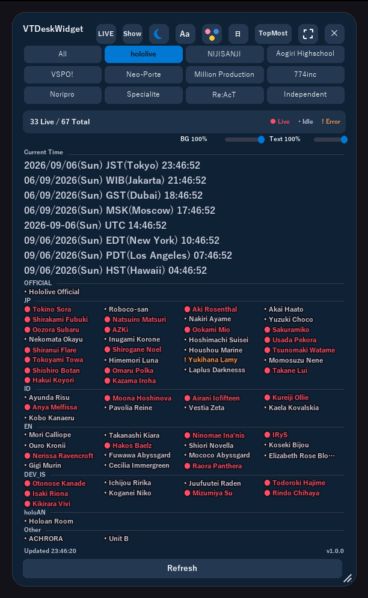
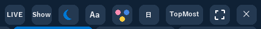
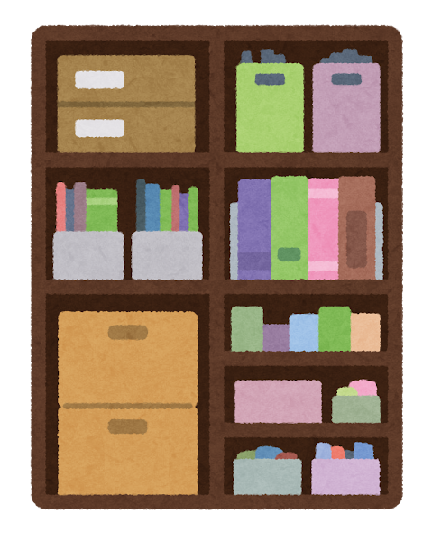
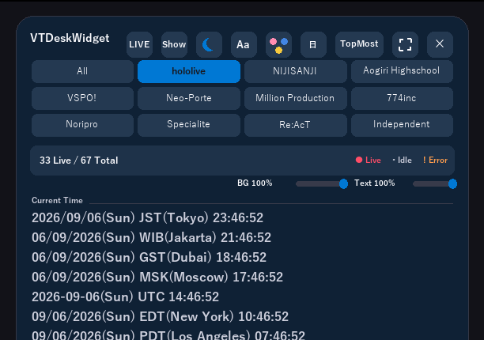
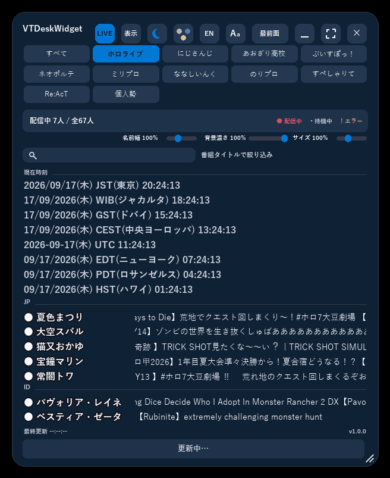
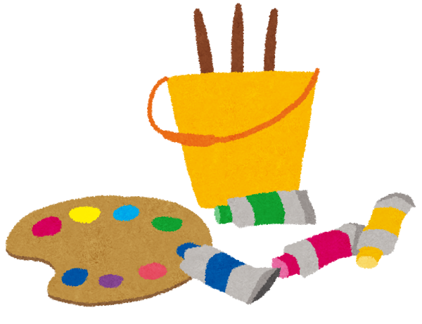
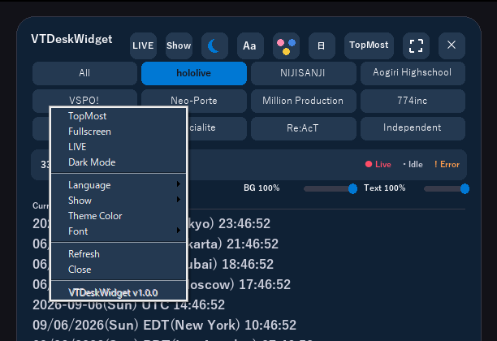
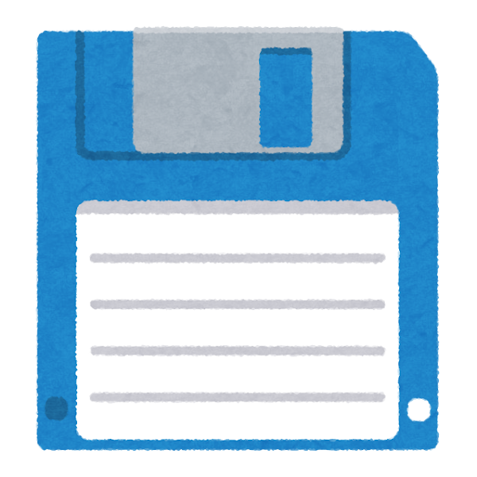

The real thing: tab switching, color-coded live status and world clocks, all in one window

One-click controls in the top-right corner: LIVE filter, dark mode, theme color, language, always-on-top and more
What it can do

Switch between productions with tabs
Jump between hololive, NIJISANJI, Aogiri Highschool, VSPO!, Neo-Porte and more with a single click. An always-present "All" tab shows every talent at once.

See stream status at a glance
Talents are color-coded as Live, Idle, or Error. Click a card to open the stream (or channel page) straight in your browser.

A translucent window that stays on your desktop
An always-on-top, see-through window you can drag anywhere. Grab an edge or corner to resize it freely.

LIVE filter shows only who's streaming now
Narrow the list down to talents currently live, with stream titles scrolling by as a ticker.


A world clock, right alongside the streams
Shows the current time for zones like JST, WIB, UTC, EST and more. Add, remove, or relabel zones freely.

Make it look the way you want
Dark/light mode, theme color, font, display language (Japanese/English), background opacity and text size are all adjustable.


Every setting saves itself
Window position, size, and all your preferences are saved automatically and restored the next time you launch the app.

Channels resolve themselves (hololive)
For the hololive tab, the app looks up each talent's YouTube channel from the official site on startup, keeping broken links to a minimum.
Windows only. An internet connection is required.